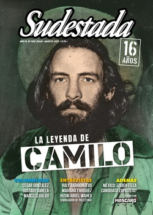

Buscar
Buenos tiempos para equilibristas
Corren tiempos modernos, dicen los que saben. Esos, los que están de vuelta de todo. Buenos tiempos para los que repiten que la imagen es todo y las ideas ya no le importan a nadie. Los que definen al electorado como potencial consumidor. Los que sacan a viejos dirigentes del vetusto árbol del "que se vayan todos" o los ocultan bajo la alfombra a fuerza de photoshop y astucia marketinera.
Edición N° 148
Julio-Agosto 2017
Revista bimensual
Comprar edición impresaSumario
- La leyenda de Camilo
- Buenos tiempos para equilibristas
- "A veces, uno busca con una intuición del corazón"
- Marichuy: "Enfrentar la guerra todos juntos"
- La imagen neoliberal
- "Lo fantástico es el terreno donde mejor me muevo"
- "La voluntad del pueblo palestino es inquebrantable"
- Un lugar donde la unión salva
- Batallas contra el olvido
- Tango y Estado
- "Me interesaba conocer cuáles eran sus sueños, cómo pensaba"
- Dostoievsky entre nosotros
- Ser fiel a la Recova
Compartir Articulo
Corren tiempos modernos, dicen los que saben. Esos, los que están de vuelta de todo. Buenos tiempos para los que repiten que la imagen es todo y las ideas ya no le importan a nadie. Los que definen al electorado como potencial consumidor. Los que sacan a viejos dirigentes del vetusto árbol del "que se vayan todos" o los ocultan bajo la alfombra a fuerza de photoshop y astucia marketinera. Los que acomodan a candidatos dispuestos a todo por un lugar en la marquesina. Los que sueñan con gendarmes en todas las calles. Los que financian operadores con micrófono. Los que aplauden ajustadores seriales y no tienen problema en endeudar hasta a su nietos. Los que hablan de mística y se rodean de pichones de traidores, coimeros en rehabilitación y kiosqueros de la transa. Los que defienden a la runfla que se acomoda a la sombra de la billetera del Estado. Los que esperan su turno y corren a levantarle la mano a cuanto proyecto oficialista se asoma en el parlamento. Hasta esos, los que se dicen de izquierda y dedican todo su tiempo útil a demoler a sus aliados y a pelearse a los codazos por algún carguito en la boleta del sectarismo.
Mientras tanto, abajo, lejos de las luces, en la superficie rugosa de la realidad, el cotillón de la fiesta electoral no es prioridad para nadie. Anotemos durante una semana: en PepsiCo, 600 despidos. En Puma, otros 180. En la química Lanxess, 170. En los talleres ferroviarios Rioro, 70. Hace días, en la central Atucha, 600 telegramas viajaron a la casa de los trabajadores. En la vereda de un barrio cualquiera, una turba de vecinos, de esos que pagan sus impuestos y se jactan de hacerlo, golpea a un pibito de diez años que se atrevió a afanarse un celular. En el almacén del barrio, el consumo de leche y pan se desploma. Arriba de un colectivo, la policía baja a empujones a un par de pibes por el delito de usar gorra y estar en el lugar equivocado en el momento menos oportuno. En un descampado sin nombre, una joven es asesinada por un sujeto que gozará de la impunidad de un Estado que siempre llega tarde, cuando llega. En una comisaría de acá nomás, una valija con el puntual aporte mensual sobre la mesa del comisario garantiza la distribución de paco en los alrededores. En una piecita olvidada por las estadísticas, una piba se muere desangrada por someterse a un aborto clandestino. En la cuenta bancaria de los patrones del agronegocio y el extractivismo, las ganancias no paran de crecer. Bajo la mesa de algún burócrata sindical de pulidas mañas, un sobre se asoma a cambio de evitar cualquier "contratiempo". Frente al imponente altar del veterano sacerdote, el abuso infantil ocupa varios versículos de su turbia oración. En una provincia central, un grupo de choferes de bondi no se resigna a perder sus fuentes de trabajo y se moviliza, pese a las críticas de la prensa a sueldo y de los funcionarios del despacho blindado. En un húmedo cajón de otra gestión provincial, duerme el sueño de los justos el reclamo por mejoras salariales de los docentes. En la cocina de cualquier laburante del conurbano, alguien está contando las monedas para cargar la Sube. En un sembradío de soja, un avión pasa fumigando y descarga su veneno sobre los pulmones de los nenes de la región.
Es esa otra realidad. La que no aparece en las encuestas. La que no tiene espacio en los avisos televisivos. La que no tiene apellido en las boletas. La que no se ve detrás de los globos de colores y los discursos de campaña. La realidad que no se vota. La que se respira todos los días. La que viaja en tren y en colectivo, todas las mañanas. La que ya no se cree el verso. La que cruje por todos lados. La que no se aguanta más.
DULCES 16
Con esta edición que llega a tus manos, cumplimos 16 años de vida como publicación. Pero no se trata de una cuestión matemática: este tiempo de trabajo, de esfuerzo, de alegrías y frustraciones, tiene mucho que ver con tu curiosidad, con tu interés, con tu inquietud. Porque, a decir verdad, nosotros estamos ahí, colgados de un broche del kiosco, o viajando en tu mochila y en tu bolso. Pero con eso no alcanza. Para lograr comunicar, emocionar, informar, divertir, precisamos de tu lectura atenta. De tu mirada crítica. De tu opinión cuestionadora. Como ahora, que empezás a leer y a buscar. De eso se trata entonces: de una búsqueda. La nuestra y la tuya, de un lado y del otro del papel. No es tan diferente. En eso nos parecemos. Nuestros referentes son los mismos. Las historias que nos apasionan, también. Por eso celebramos este encuentro: justo en este momento, cuando tus ojos arrancan el viaje por estas páginas, algo se destraba. Acá estamos, otra vez, como desde hace 16 años. Esperando que el fueguito de la curiosidad nos permita dialogar.
Comentarios

Sudestada
El colectivo de Revista Sudestada esta integrado por Ignacio Portela, Hugo Montero, Walter Marini, Leandro Albani, Martín Latorraca, Pablo Fernández y Repo Bandini.
Articulos más vistos


LIBRERÍA SUDESTADA

Colección infantil

Distribuidora de Libros

Suscripción

Sudestada en URUGUAY

Otros articulos de esta edición
"A veces, uno busca con una intuición del corazón"
No tiene apuro en esta entrevista con Sudestada. Por ese motivo, mientras comparte un mate y recorre el presente de ...
La imagen neoliberal
No es que el neoliberalismo en sus formas de comunicar usa más la imagen que el discurso. Más bien, su ...
"Me interesaba conocer cuáles eran sus sueños, cómo pensaba"
Lejos del mito ingenuo y vacío de sentido que se intentó construir alrededor de María Claudia Falcone y de sus ...
La leyenda de Camilo
Cada 28 de octubre, una multitud de niños y niñas camina hasta la orilla del malecón habanero y arroja una ...
"Lo fantástico es el terreno donde mejor me muevo"
Las texturas con las que trabaja Mariana Enríquez se advierten cercanas al mundo de lo fantástico, a un caminar por ...
Dostoievsky entre nosotros
Una obra de teatro también puede ser un repaso por los personajes y conflictos de un autor emblemático como Dostoievsky. ...